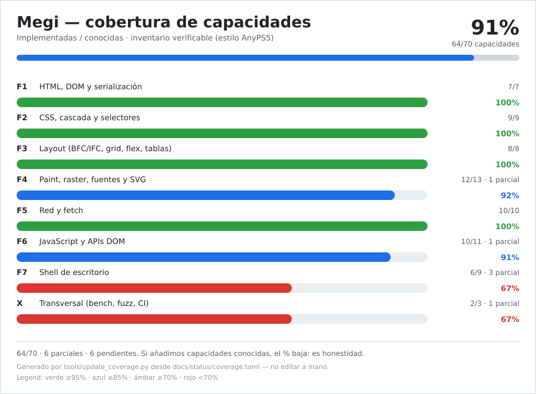

96% 72/75 capacidades implementadas · 1 parciales · 3 pendientes

| Área | Impl. | Conocidas | % | Barra |
|---|---|---|---|---|
| F1 HTML, DOM y serialización | 7 | 7 | 100% | ████████████████████ |
| F2 CSS, cascada y selectores | 9 | 9 | 100% | ████████████████████ |
| F3 Layout (BFC/IFC, grid, flex, tablas) | 8 | 8 | 100% | ████████████████████ |
| F4 Paint, raster, fuentes y SVG | 13 | 13 | 100% | ████████████████████ |
| F5 Red y fetch | 10 | 10 | 100% | ████████████████████ |
| F6 JavaScript y APIs DOM | 13 | 13 | 100% | ████████████████████ |
| F7 Shell de escritorio | 9 | 10 | 90% | ██████████████████░░ |
| X Transversal (bench, fuzz, CI) | 3 | 5 | 60% | ████████████░░░░░░░░ |
| Área | Id | Capacidad | Estado | Issue | Detalle |
|---|---|---|---|---|---|
| F7 | F7-A11Y | Accesibilidad y widgets nativos | partial | #989 | no requiere evidencia |
| X | X-AVIF | Decodificación de imágenes AVIF | missing | #1895 | no requiere evidencia |
| X | X-PERF-REALSITES | Rendimiento acceptable en sitios reales complejos | missing | #1899 | no requiere evidencia |